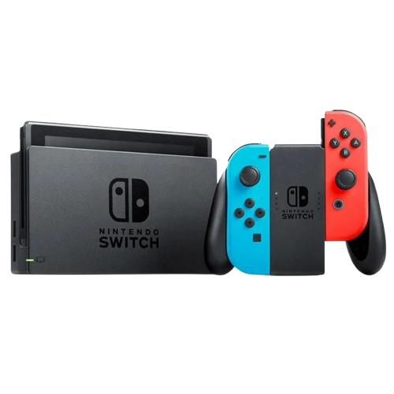
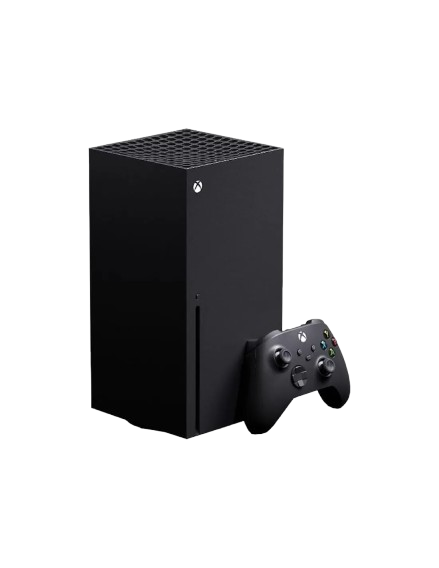

Consolas más populares
A continuación, presentamos una descripción y las especificaciones técnicas de las consolas más populares del mercado actual: Nintendo Switch, PS5 y Xbox Series X.
Nintendo Switch

- Procesador: NVIDIA Tegra X1
- Resolución: 720p en modo portátil, 1080p en modo dock
- Almacenamiento: 32 GB (expandible vía microSD)
- Portabilidad: Híbrida, se puede jugar en TV o como consola portátil
- Juegos Destacados: The Legend of Zelda: Breath of the Wild, Animal Crossing: New Horizons
PS5

- Procesador: AMD Ryzen Zen 2 a 3.5 GHz
- GPU: 10.28 TFLOPS, RDNA 2
- Almacenamiento: 825 GB SSD
- Resolución: 4K hasta 120 FPS, soporte 8K
- Juegos Destacados: Demon's Souls, Spider-Man: Miles Morales
Xbox Series X

- Procesador: AMD Zen 2 a 3.8 GHz
- GPU: 12 TFLOPS, RDNA 2
- Almacenamiento: 1 TB SSD
- Resolución: 4K hasta 120 FPS, soporte 8K
- Juegos Destacados: Halo Infinite, Forza Horizon 5